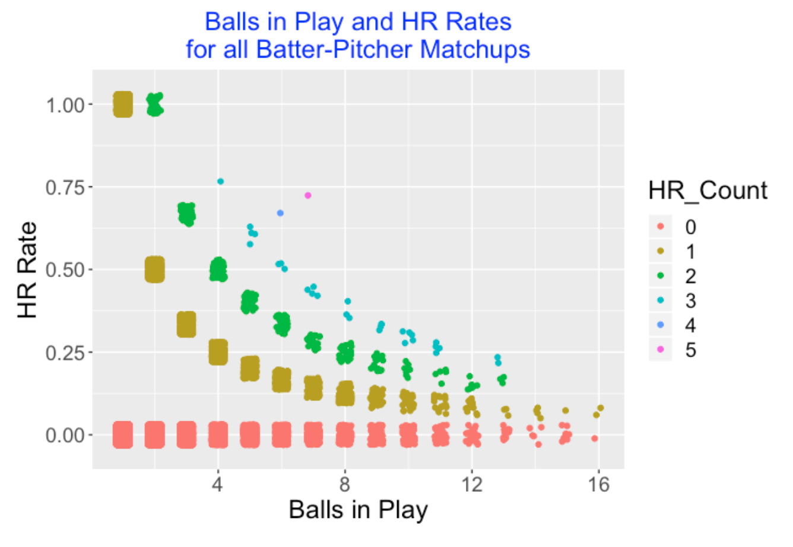

Home Run Posts
1 Introduction
2 Situational Home Run Hitting
2.1 Situational Effects
As some of you might know, one of my interests over the years has been in situational effects – these effects such as home vs away, opposite vs same arm pitching, clutch vs non-clutch situations, are often subtle and hard to interpret. To illustrate situational effects in baseball, I thought I would take a “situational” historical view of home run hitting. We all know about the general effects (home run rates are currently on the rise, for example), but how home runs are hit in various situations is less known.
2.2 Data
For this study, I used Retrosheet play-by-play data to collect situational effects for all home runs hit in the seasons 1980 through 2015 – in these 36 seasons there were 154,294 home runs hit.
2.3 Average Runs Value
The benefit of a home run is commonly measured by runs value found by using the runs expectancy matrix. In Chapter 5 of Analyzing Baseball Data With R, we found the average runs value of a home run was approximately 1.39. How has this average runs value changed over the years?
What is interesting is the volatility of this average measure over season. It is not easy to see a basic trend, but it appears that the average runs value of home runs has been decreasing in recent seasons.
2.4 Solo Shots?
If the average runs value is decreasing, that might mean that there is a greater percentage of solo home runs. This motivates graphing the percentage of solo home runs over our time period.
Like the first graph, there is much variation in this percentage over seasons, but the percentage of solo home runs is indeed increasing in recent years. That seems to imply that teams are less effective in setting the table; that is, getting runners on base.
2.5 Grand Slams?
If solo shots are increasing, that might suggest that grand slams (home runs with the bases loaded) are less prevalent.
The graph shows that the percentage of home runs that were grand slams was high in the mid 90’s (and reached a high in the 2000 season), but this percentage has been consistently low between 2011-2015.
2.6 There is No Place Like Home?
We know that this is home field effect in scoring runs – the home team will generally score more runs at home than on the road. So one would expect there to be a home bias in hitting home runs. To check this, I graph the percentage of home runs hit by the home team across seasons. I have added a line at 50% so we can quickly see if there is indeed an advantage.
There are three interesting patterns in this graph:
- There was not a home advantage to hitting home runs between 1980 and 2000 – in fact the smooth lies completely below the 50% line.
- There was a boost in the home advantage peaking about 2008.
- The percentage of home runs hit at home has been decreasing in recent seasons.
2.7 Count Effects?
It would seem that batters would hit a high percentage of their home runs in so-called batter counts (like 2-0 and 3-1) where the pitcher is more likely to throw a ball in the middle of the strike zone. Likewise, I would anticipate batters to hit a small percentage of home runs in pitcher counts (like 0-2 and 1-2). I’m actually more interested in seeing how these percentages have changed over seasons. (By the way, the careful reader might note that I’m limiting this analysis to seasons 1988 and later. The percentages of home runs hit in batter and pitcher counts in the Retrosheet data were much smaller in seasons before 1988, suggesting the data is not complete for those earlier seasons.)
In the 1990’s, the percentages of home runs hit in batter and pitcher counts were about the same (25%) – this means that about 50% of the home runs were hit in neutral counts (0-0, 2-1, etc.) But these two percentages have diverged greatly in the last 20 seasons. Hitters now are hitting a greater percentage of home runs in pitcher counts. There likely is a good explanation for this that could be gleaned from further study. (For example, I did not account for the number of pitches in batter, pitcher, and neutral counts – these may have also changed over the years.)
2.8 Takeaways from this work
One thing that is obvious from this study is that situational effects show much variability across seasons – you can’t make much sense of these by looking at a single season. Generally, situational effects are a different animal from main effects (like summary performance measures for batters and pitchers), and it is easier to be misled by some of these values. But a historical study does lead to finding interesting patterns.
3 Kong, Strikeout and Home Run Rates
3.1 Dave Kingman
I was recently thinking about an interesting player in the 1970’s Dave Kingman, nicknamed “Kong”. He hit 442 home runs over a 16-season career, but he was also known for his propensity to strike out. At the time, Kingman was believed a bit extreme in striking out. Times have changed in 2017 where strikeouts are more accepted. Kris Bryant (current slugger) recently made an interesting comment related to power and striking out:
“If you’re able to continue to sustain hitting for power and driving in runs, then nobody cares about the strikeouts.”
This reflects the belief among some players that strikeouts are just a common by-product of a player’s effort to hit home runs.
That raises several questions:
- What is the association between strikeout rates and home run rates? Has the association changed between Kingman’s era (we’ll look at the 1972 season) and the current era?
- Is the strikeout rate and home run rate collectively useful in determining the offensive value of a player? Assuming that strikeout rates and home run rates are positively associated, who are some interesting players who buck the trend, that is, combine a high home run rate with a low strikeout rate?
We’ll try to address these questions in this study.
3.2 1972 and 2016 Seasons
From Fangraphs I collected the strikeout rates (SO / PA) and home run rates (HR / PA) for all players with at least 250 PA for the 1972 and 2016 seasons. Below I construct a scatterplot of the K Rate (horizontal) against the HR Rate (vertical) for both seasons. This graph shows how strikeouts and home runs have dramatically changed in the 44-year period.
Here are some interesting observations:
- The obvious thing is that the distribution of strikeout rates has drifted substantially to the right between 1972 and 2016. In 1972, many players had strikeout rates under 10% – currently it is unusual to have a strikeout rate under 10%. As we see above, Kingman was really extreme in 1972 with a strikeout rate exceeding 30%. During the 2016 season I count 15 players with a K rate exceeding 30%.
- Also the home run rate distribution has changed a lot in 44 years. There were a number of players in 1972 with no home runs – now it is rare for a player not to hit a home run during the season. In 1972, having a home run rate over .04 was uncommon – now many players have HR rates exceeding .04.
- There is one 1972 player who combined a large HR rate with a low K Rate – Hank Aaron. It is interesting that Aaron had a larger HR rate than Kingman and a much smaller strikeout rate.
- Another interesting observation is that the spread of strikeout rates has increased between 1972 and 2016. Not only are strikeout rates increasing, but there is also more variability in the rates across players.
3.3 Discriminating Between High and Low wOBA Players Based on the Two Rates
The weighted on-base percentage wOBA is a good summary measure of offensive performance. How good are strikeout rate and HR rate in understanding the variation in wOBA values? In the scatterplot below, I show a scatterplot of 2016 K and HR rates where I color the point by wOBA – a red point is a player with a “high” wOBA (that is, higher than the median) and a black point is a player with a “low” wOBA. Note that the high wOBAs seem to correspond to players with low K rates and high HR rates.
Suppose we use a logistic model where p is the probability of a high wOBA and we fit the logistic model
\[ \log\left(\frac{p}{1 - p}\right) = constant + a KRate + b HRRate \]
We fit this model – the black line represents the values of (K-Rate, HR-Rate) where the probability of a high wOBA is equal to 0.5. The model predicts that players above the line will have high wOBA and players below the line will have low wOBA. How good is this discrimination model? I calculated that this model correctly classified 75% of the players as having high or low wOBA. I label two interesting players who deviate from this black line. David Ortiz is unusual in that he combined a high HR-Rate with a low K-Rate. Travis Jankowski was unusual (in the negative sense) in that he had an unusually low HR-Rate given his high strikeout rate.
3.4 Going Further
- As we know, strikeout rates have been increasing steadily for a while. They continue to increase – the 2016 K rate (K / PA) was 21.1% and today (May 15) the K rate is 21.4%.
- What is the impact of this increase on offensive performance in baseball? An increase in strikeouts may mean a reduction in the number of balls put into play. And with a reduction in the opportunities to put runners on base, I would think we’d eventually see a reduction in run scoring. Or players generally compensating the strikeouts by hitting more home runs?
- Who are the Hank Aarons in modern baseball – the players who hit for high home run rates with small strikeout rates? Generally, I think teams need hitters who don’t strike out. There are situations, say a runner on 3rd with 1 out where it seems important to put the ball in play.
4 Exploring 2017 Home Runs Using Retrosheet Data
4.1 Retrosheet Data and Home Runs
Retrosheet recently made available the game accounts and play-by-play files for the 2017 season. I have a web page on how to download Retrosheet play-by-play files and compute run expectancies and this information still works for the current season.
Of course, one of the main points of discussion about the 2017 season was the record number (6105) of home runs hit. To celebrate the new Retrosheet data, I thought I’d present some interesting explorations of the 2017 home run data, and contrast 2017 with the 2000 season when the second most season home runs (5693) were hit. Recently, I wrote a short post comparing the home run hitting for the 2016 and 2017 seasons.
4.2 Home Run Weather Effects
Since we have the number of home runs hit for each game, it is easy to find the home run rate (that is, home runs divided by plate appearances), for each day of the 2017 season. Here’s a scatterplot with a smoothing curve added. It is interesting that the April and May home run rates were low, rates seemed to stabilize in the middle of the season, and there was a small decrease in the home run rates towards the end of the season. Is this a cold weather effect? (As one knows, the weather can have a big impact on the flight of fly balls and home runs.)
4.3 How Long Does One Wait to Observe a Home Run?
As you might know, I am interested in exploring streaky patterns in hitting. Suppose we record the specific plate appearances where one observes home runs and compute the spacings – the number of plate appearances between the PA’s of successive home runs. Here’s a histogram of all of the spacings (waiting times where unit is a PA) between home runs for the 2017 season. If an occurrence of home runs across PA’s is a coin-tossing process with a constant probability of success (that is, hitting a home run), then the spacings will have a geometric distribution. I’ve attached a matching geometric probability curve. It does a reasonable job at matching this spacing distribution although the assumptions are not true (for example, HR’s are not equally likely to occur during each position in the lineup). By the way, the median spacings is 14 PA, so a baseball fan will wait, on average, 14 PA before she observes the next home run.
4.4 Runs Values of Home Runs
When I download the Retrosheet data, I also compute the runs values of each play. So it is easy to plot the runs values of the 6105 home runs. As this graph shows, most of the home runs are the bases empty variety with a runs value of 1. Of the home runs with greater runs values, most fall between 1.5 and 2 runs.
4.5 Comparing 2017 and 2000 Seasons – Which Rate?
I wanted to compare the home run hitting for the 2017 and 2000 seasons. Suppose one looks at only the batters with at least 200 plate appearances. If one defines a home run rate as HR / PA, then one finds that
- Median HR Rate for 2017 = 0.032
- Median HR Rate for 2000 = 0.029
so that the Median HR rate in 2017 is 0.032 - 0.029 = 0.003 higher. But given that there were many more strikeouts in 2017, maybe it would make more sense to divide the number of home runs (HR) by the number of balls in play (PA - BB - SO). Then we find
- (IP) Median HR Rate for 2017 = 0.044
- (IP) Median HR Rate for 2000 = 0.037
so focusing on balls in play, the Median HR rate in 2017 is 0.044 - 0.037 = 0.007 higher.
Above we are focusing only on the average HR rates for the two season. To better compare the two distributions of home run rates, we compute the quantiles for a set of probability values from 0 and 1 for both distributions. Below I have plotted the 2017 quantile minus the 2000 quantile for different probabilities using the HR / PA definition and the HR / (PA - SO - BB) rate definitions. We see several things:
- Clearly the home runs rates are more different between the 2000 and 2017 seasons if we look at the rate of home runs for balls put in-play.
- For the sluggers (corresponding to the high proportion values), the differences between the two season home runs are smaller.
- For the In-play rate, the two season rates are most different for the “above average” sluggers (corresponding to proportions values from .6 to .7).
4.6 Follow-up Questions
This was a quick exploration of home runs using the new 2017 Retrosheet data, but this work does suggest some follow-up questions for future exploration.
- What about the home run weather effects? Are home runs harder to fit during colder weather? To begin, I’d look into the rate of home run hitting for other seasons to see if there is a April/May effect.
- Although home run spacings are approximately distributed according to a geometric distribution, there appear to be some deviations from geometric in the above graph that deserve a closer look.
- The rise in strikeouts decreases the opportunities to hit home runs as demonstrated by this comparison of the 2017 and 2000 seasons. It would be interesting to look more carefully at the relationship between strikeouts and home runs.
5 2017 Home Runs: Zone Location and Count Effects
5.1 Introduction
In last week’s post we explored the 2017 home run hitting using the newly released Retrosheet play-by-play data. We looked at weather effects (home runs appear to be less common in the colder months), spacings between successive home runs, runs-values (most home runs are of the solo variety), and compared the quantiles of the 2017 and 2016 home run rates. Since a record number of home runs were hit in the 2017 season, this topic deserves a second post. Using Statcast data, we look at the locations in the zone where home runs are hit, and also look at the popular counts for home run hitting.
5.2 Where in the Zone are Home Runs Hit?
In the 2017 season, 6209 of the 129,365 balls in play were home runs for a rate of 6209 / 129,365 = 0.048. For a first look at popular zone locations, I divide the data into four groups by the hitter side and the pitcher arm and construct scatterplots of the zone locations of the home runs. I make the darkness of the plotted points somewhat transparent (using the alpha option in the ggplot2 package) that seemed helpful in showing the popular home run areas in the zone. Not surprisingly, most home runs are hit on pitches within the zone
5.3 Modeling the Home Run Probability
Since the above scatterplots are not that informative, we fit a regression model to get a smooth description of the pattern of home run hitting. Let p denote the probability a batted ball is a home run. Using the gam() function from the mgcv package in R, one can fit the generalized additive model of the form
log (p / (1 - p)) = s(plate_x, plate_z)
where s() is a smooth function of the horizontal and vertical pitch locations. We fit this model four times for each of the four groups (depending on the batter side and pitcher arm). By constructing contour plots of the fitted probabilities, we get a sense of the popular home runs for each scenario. In the graph, the contour lines correspond to home run probabilities of 0.04, 0.06, and 0.08. I add the “B” symbol to clarify the batter side in each case.
These graphs are interesting to read.
- For situations where the batter and pitcher are on the same side (graphs on the left side), the hot zone is in the middle of the zone and low-inside pitches.
- When the batter and pitcher are on opposite sides (graphs on the right side), there are multiple regions where the home run probability exceeds 0.08, and the size of the region where the probability is larger than 0.04 is much larger than the “same side” case.
5.4 Home Run Count Effects
One way to clearly understand the importance of the count is to look at home run hitting. We record the in-play count (balls and strikes) and whether or not a home run was hit for each batted ball during the 2017 season.
Among all batted balls that were home runs, 16.2 % occurred on a 0-0 count, and for all batted balls that were not home runs, 15.4 % occurred on a 0-0 count. Convert these probabilities to odds – the odds of a 0-0 count for a home run is 16.2 / (100 - 16.2) = 0.193 and the odds of a 0-0 count for a not home run is 15.4 / (100 - 15.4) = 0.182. The ratio of the odds – (odds of 0-0 count for home run) / (odds of 0-0 count for not home run) = 1.06. So a 0-0 count is slightly more likely for a home run than for not a home run.
We repeat this calculation for all possible counts on a batted ball – here’s the graph. I’ve added a horizontal line at 1 – points above the line correspond to counts which are more likely with home runs, and points below the line correspond to counts less likely with home runs. The odds ratio is less than one for the obvious pitcher counts (0-1, 0-2, 1-2, 2-2), significantly greater than one for the hitter counts (1-0, 2-0, 2-1, 3-0, 3-1), and approximately one for the neutral counts (0-0, 1-1, 3-2). Also the home run count advantage gets larger for more advanced counts – the biggest advantages are 3-0, 2-0 and 3-1.
5.5 Going Further
- All of the work was done using Statcast batter data scraped using the
baseballrpackage. - I’ve had pretty good success in using generalized additive modeling to smooth 0/1 outcomes over a two-dimensional surface. Above we looked at the average home run zone – it would be interesting to look at the home run zone for specific hitters.
- Given the size of the count effect for home runs that we see above, it is important for pitchers to stay ahead of the count. The top pitchers tend to throw first-pitch strikes and are less vulnerable to home runs hit during batter counts.
6 Home Runs and Run Production
6.1 Introduction
We all know that home run production is up in 2019 (see my recent post for a visualization of this increase). But I’m interested in exploring how this increase in home run hitting has changed run production in baseball.
Let’s first think about a “traditional” view how runs are scored in baseball. I say traditional in the sense that it is the way that I generally thought teams thought about run scoring when I was growing up. A manager sets up a batting lineup so that the the first few batters get on-base (so-called “setting the table”) and then the followup hitters’ roles are to advance those runners home. Moving the runners into scoring position plays an important role in this traditional view of scoring. Sacrifice bunts and stolen bases are used to advance the runners. Speed is an important attribute of a batter in this traditional view – a speedy runner is able to advance an extra base in particular situations. With one out, a runner on 3rd base has a better chance than a runner on 2nd base in getting home.
Contrast this traditional view with the 2019 system for scoring runs in baseball. Home runs currently play a major role in scoring runs. A home run is an automatic run for your team. Sure, it is nice when there are runners on base, but a home run always produces one run. With this modern view of scoring, stealing bases and sacrifice bunts are not a significant part of the run-scoring strategy. Why sacrifice an out with a bunt or a failed stolen base attempt? You are giving your team fewer opportunities to hit home runs.
In this post, I’ll show using several graphs how home run hitting has played an increasing role in run production. Following a discussion of these graphs, I’ll suggest that the changing role of home run hitting impacts other aspects of baseball offense and that will motivate further explorations.
6.2 How are Runs Produced?
There have been dramatic changes not only in home run production but in the fraction of runs produced by home run hitting. For each of the seasons from 1960 through 2018, I computed three quantities: (1) the total number of runs scored, (2) the total number of home runs, and (3) the total number of runs produced or batted in by home runs. Let’s consider the percentage
HR_Pct = (Runs produced by home runs) / (Total runs)
Below I graph this HR_Pct against season. What do we see?
Home runs contributed about 1/3 of the runs scored in 1960 but it dropped steadily to about 25% about 1980.
But then there was a general increase in home run percentage which slowed down about the 2000 season.
Since about 2010 there has been a steady increase in home run percentage with an all-time high value about 42% in 2017. (I suspect it may be higher than 42% this season.)
6.3 Runs Produced for Each Home Run
It is also relevant to look at the average number of runs produced by a home run and see how that has changed in baseball history. Before I looked at the data, I suspected that the average runs per home run has dropped in recent years. Why? Well, if teams are less interested in getting runners on base, then there would be more solo home runs and this would drop the average run scoring of home runs.
By the way, I should distinguish runs produced per home runs from the runs value of home runs. For example, a grand slam home run will produce 4 runs, but the value of this particular home run will be smaller than 4. The runs value calculation takes in account the run potential before and after the home run and the run potential with bases empty is smaller than the potential with the bases full.
Looking at the graph below …
The average runs scored per home run hasn’t shown a trend like the home run count but we see some interesting up and down behavior.
Since the 2000 season, there has been a steady decline in the runs per home run.
There are some interesting outliers at both the high and low ends which probably deserve further study.
6.4 So What?
There are some consequences of the increasing role of home runs in run production.
Value of players: Jay Bruce or Dee Gordon? Bruce and Gordon, teammates on the Mariners, are very different types of hitters. Dee Gordon is a singles machine and is speedy around the bases. In contrast, Bruce focuses on hitting home runs – his batting average currently is only .188, but 12 of his 24 hits are home runs. Given the important role of home runs in scoring runs, I would think that hitters like Bruce would be more valued than hitters like Gordon.
View of strikeouts. As we know, the percentage of strikeouts among plate appearances has been steadily increasing. But players with high strikeout rates tend also to hit home runs. So maybe strikeouts will be viewed as one of those consequences of hitting home runs and teams will be more accepting of these strikeouts.
Fewer defensive plays. With more strikeouts and more home runs, fewer balls will be put in play. Does that mean that defense will play a smaller role in baseball/
Fewer singles. The perceived value of a single seems to have dropped since they don’t contributed to as many runs as in the past.
All of these suggested consequences can be explored with data. For example, it would be interesting to classify all runs scored by the sequence of plays that lead to the runs scored. For example, three single-base events like “single, walk, single” may lead to a run – how has the frequency of this sequence of plays changed over the last 20 years. How many stolen bases contributed to runs scored? MLB has concerns about this increasing role of home runs in run scoring and it would seem that some additional understanding of the changes how runs are scored would be beneficial.
7 Pitcher/Batter HR Matchups and the Shrinking Standard Deviation
7.1 Introduction
I’ve been thinking about home runs too much in 2019, and based on our recent MLB report, it appears that I will continue to explore home runs in 2020. Here is an interesting thing about home run production. We all know that there have been a record number of home runs hit in recent seasons (6776 home runs hit in 2019). But we haven’t observed recent great individual home run achievements. For example, the only people to exceed Roger Maris’ (1961) season of 61 home runs are Barry Bonds, Sammy Sosa, and Mark McGwire, and all of these season home run records are tainted due to the Steroids era. (Here is a recent article on the effect of steroids on hitting performance.) So currently we are seeing great collective home run hitting, but we aren’t seeing this greatness at the individual level.
Also, the media gets excited about batter-pitcher match up stats. For example, in 2017, Max Kepler hit 5 home runs in 7 balls in play against Trevor Bauer and Jordan Luplow hit 4 home runs in 6 BIP against Manny Banuelos. How does one make sense of these extreme accomplishments?
In this post, we’ll explore all batter-pitcher home run match ups for a particular season. By use of a random effects model, we’ll address these questions:
If one looks at the variability of all of the home run rates, how much of this variability is due to differences between batters and how much is due to differences between pitchers?
This model fitting will allow us to measure the variability of home run rates among batters and the variability of the rates among pitchers. How have these measures of variation changed in the last 20 seasons?
7.2 A Disclaimer
Typically when I start thinking about a new post I check to see if I’ve posted on the same topic in the past. Unfortunately, I didn’t do that in this case. A couple of years ago, I posted on home run rates and fit the same model. But this post complements what I did earlier and provides some new insight here, specifically in looking at the model fits for the last 20 seasons.
7.3 The Data
For a particular season, say 2019, I use Retrosheet play-by-play data to collect the number of balls in play and the number of home runs hit for each batter against each pitcher. There were 62,409 of these match ups in the 2019 season. In the following graph, I plot the number of balls in play (horizontal) against the home run rate (vertical) for all of these matchups. Since there is serious overplotting, I jitter the point location so one can guess at the number of matchups at a particular location. Also I color the plotting point by the number of home runs. For most matchups, there were 0, 1, or 2 home runs hit. But there were 25 occurrences where a batter hit 3 home runs against a specific pitcher, and as noted above, there was one 5 home run occurrence (Kepler against Bauer) and one 4 home run occurrence (Luplow against Banuelos).

7.4 A Random Effects Model
A random effects model is a helpful way of understanding the sources of variation of these home run rates – how much is due to pitchers and how much is due to the batters. Since we are used to thinking about home run sluggers and less about pitchers who allow a lot of home runs, I think one would think that the greatest source of variability would be the hitters, but we can check this by fitting the model.
Let \(p_{ij}\) denote the probability that a home run is hit by the ith batter against the jth pitcher. The model says that the logit of the probability is given by an intercept plus an effect due to the batter and an effect due to the pitcher.
\[\log \frac{p_{ij}}{1 - p_{ij}} = \mu + \alpha_i + \beta_j\]
To complete the model, we assume that the batter effects {\(\alpha_i\)} come from a normal distribution with mean 0 and standard deviation \(\sigma_B\) and the pitcher effects {\(\beta_j\)} come from a normal distribution with mean 0 and standard deviation \(\sigma_P\). When we fit this model, we learn about the two sources of variability from the estimates of \(\sigma_B\) and \(\sigma_P\). Also we get estimates at the batter effects \(\alpha_i\) and the pitcher effects \(\beta_j\) for the individual batters and pitchers.
7.5 Fitting the Model to the 2019 Data
We fit this model quickly using the glmer() function from the lme4 package. When we fit this model to the 2019 season data, we obtain the estimates
\(\sigma_B = 0.433, \, \, \sigma_P = 0.198\)
As we thought, much more of the variability in the home run rates is due to batters compared to pitchers. One way to demonstrate this is to graph the estimates of the batter effects and the pitcher effects (on the probability scale) on the same graph. We see that the the pitcher home run rate estimates are close to 0.05, but there is larger variation in the batter home run rate estimates.
7.6 Fitting the Model for Recent Seasons
Since there has been dramatic changes in home run hitting in recent seasons, I am interested in how the sources of variation of the home run rates have changed. So I fit this random effects model for each of the last 20 seasons from 2000 to 2019, collecting the values of \(\sigma_B\) and \(\sigma_P\).
Here’s a plot of the pitcher standard deviations against season. It seems that there has been no obvious change in these standard deviation estimates, but we note one unusually low value in 2016.
When we plot the batter standard deviation estimates, we see a clear pattern. There is a steady drop in the batter standard deviation estimates from 2011 through 2019.
7.7 Takeaways
I’ve written a single R function
fit_model()(found on my gist Github site) that does all of these calculations. The input is a Retrosheet play-by-play data frame and the output is (1) the batter-pitcher matchup data, (2) the graph of these data, (3) the estimates of the random effects and (4) the estimates at the batter and pitcher standard deviations.As one would expect, this shows that most of the variability in the home run rates is due to differences in batters compared to differences in pitchers. So it makes sense to focus on home run leaders among batters.
But batters are getting more similar in home run ability, as demonstrated by the decreasing value of the batter standard deviation. It is notable that the smallest value of the home run standard deviation was achieved in 2019.
This is reminiscent of Stephen Jay Gould’s batting average study. Gould thought that we would never see a .400 batting average due to the decreasing standard deviation of the AVGs in recent seasons. In a similar fashion one might wonder if we will never again see a 70 home run season performance due to the shrinking standard deviation of the batter standard deviations.
This is an interesting area of research which deserves further study. For example, one could use this random effects model to predict the home run production in future seasons. In particular, one could predict the leading home run count in 2020. Another question would be about these extreme match up stats (the 5 HR out of 7 BIP and the 4 HR out of 6 BIP instances from the 2019 season). Are these extreme stats unusual assuming our random effects model that does not include any interaction terms? One could use a predictive check to see what outliers are predicted from our model.
8 Home Runs: Beyond Launch Angle and Exit Velocity
8.1 Introduction
In most sports, a particular accomplishment is easy to interpret since there is a precise statement of achievement. If a NBA player makes a three-point shot, we imagine a player making a shot from a distance more than 23 feet and 9 inches from the basket. A successful pole vault at 6 meters? This brings up an image of a vaulter clearing a height of 6 meters on the attempt. In both cases, there is a clear target that is reached to be a success.
In contrast, there are different types of home runs in baseball. One might think about a powerful home run by Bryce Harper that clears the center-field fence. Or one might think about a line drive hit by Didi Gregorius that barely reaches the right-field stands. Due to the differing distances to left, center and right fences in Major League ballparks, all home runs are not the same although they count the same in terms of producing runs.
How can we sort out the different type of home run hitters in baseball? Is there a way to distinguish the big sluggers like Mike Trout, Aaron Judge and Bryce Harper from the other hitters who hit home runs in the short sides of the field?
8.2 Questions
This brief discussion raises several questions that I will address.
We know that home runs are primarily a function of two launch variables – the exit velocity and the launch angle. How good is the “two launch variable” model for predicting home runs?
What is a reasonable way to measure a player’s ability to get more or fewer home runs than one would expect from this two-variable model?
Is this extra ability a skill? In other words, are there players who tend to hit more home runs that predicted from the two-variable model?
Can we distinguish the “extra ability” home run hitters from the well-known home run sluggers?
8.3 The Two-Variable Model
Consider the probability of hitting a home run on a ball put in play. For the balls put in play for a particular season, we model the home run probabilities by the GAM model
\[\log \frac{p}{1-p} = s(LA, LS)\]
where \(LA\) and \(LS\) are respectively the launch angle and exit velocity measurements, and \(s()\) is a smooth function.
One can use a cross-validation scheme to assess if this two-variable model provides good predictions of the total home run out. For a particular Statcast season, we randomly split the balls in play into two halves that we call the “train” and “test” datasets. We fit the GAM model using the “train” dataset and use the fitted model to predict the total home run count in the “test” dataset. For each of the five Statcast seasons 2015 through 2019, we performed 10 random splits. For each prediction exercise, we constructed a 90% prediction interval. In the 50 cross-validation exercises, the actual total home run was inside the prediction interval 38 times for a coverage rate of 76. The takeaway is that this two-variable model appears to provide a reasonable prediction of the total home run count for a specific season.
8.4 Deviations from Model Fit
To measure deviations from the fit, we apply a standardized residual that the reader has seen in recent posts of this blog. For each player, we compute the residual
\[Z = \frac{HR - E}{\sqrt{E}}\],
where \(HR\) is the observed home run count and \(E\) denotes the “expected” home run count found by summing over all the predicted home run probabilities for all in-play events.
What did I find when I computed these residuals for all player/seasons in the Statcast era (2015 through 2019)?
Most of the Z residuals fell between −2 and 2 which indicates the model is satisfactory. But there were 36 values of Z (player-seasons) larger than 2, and only seven Z-scores smaller than −2.
A few players had more than one season with Z > 2. This suggests that these particular players had an ability to hit home runs beyond what is predicted based on their launch angle and exit velocity measurements.
If one graphs the Z-scores for consecutive seasons, the scores are positively correlated indicating there is generally some home run hitting ability beyond what is explained by the two launch variables.
To demonstrate this last point, here is a scatterplot of the Expected HR rate against the Z-scores for the 2019 hitters who had at least 300 balls in-play. We see a negative trend. Batters with modest expected rates tend to have positive residuals and big home run hitters with high expected rates tend to have small residuals. I’ve labeled five points where the player/season Z-score exceeds 2.5.
8.5 Graphical display (Shiny app)
It would seem likely that these “high Z-score” hitters are talented in hitting home runs to right or left field where the distance from home run was relatively small. To see this effect for individual hitters, I constructed a Shiny app that displays the field locations for a player of interest of two types of balls in play.
The home runs where the color of the point corresponds to the probability of a HR from the GAM model. This display would identify the “cheap” home runs hit to left or right field.
The balls in play that were not home runs where the probability of a HR was at least 0.5. These are likely the flyballs that land on the warning track.
8.6 Several Interesting Hitters
Here is a snapshot of the Shiny app for Max Kepler. We see that practically all of Kepler’s home runs are hit to right-field. Note that many of the points are colored yellow, indicating that these balls had small predicted home run probabilities from the two-variable model. Looking at the table in the bottom left, we see that in the 2016, 2017 and 2019 seasons, Kepler hit 17, 19, and 36 home runs which exceed the respectively expected home run counts of 6.5, 12, and 22.6 from the model.
Another home run hitter with multiple high Z-scores was Yuli Gurriel. Most of Gurriel’s home runs are hit to left field although he hit four home runs to right in the 2019 season. In that season the GAM two-variable model provides poor predictions – based on his launch variables, he was predicted to hit 13.5 home runs which is much smaller than Gurriel’s actual HR count of 31.
8.7 The Sluggers
The displays for the well-known home run sluggers have a different pattern. For example, this Shiny snapshot shows the home run hitting for Aaron Judge for the 2016 through 2019 seasons. Most of Judge’s home runs had high HR probabilities using the GAM model. Moreover, there were a number of “not home runs”, especially during the 2017 season, where the probability of a HR was high. Judge’s home run count of 52 in the 2017 season was actually smaller than the expected home run count of 60.6. For the 2018 and 2019 seasons, the observed HR counts were similar to what would be predicted based on the exit velocity and launch angle measurements.
Here is the display for Nelson Cruz. Like Judge, Cruz had a number of “no-HRs” where the probability of home run was large. In Cruz’s case, for four of the five seasons, the observed home run count was smaller than the predicted count.
8.8 Some Comments
A Famous Home Run Quest. I recently rewatched the HBO movie 61* that describes Mickey Mantle and Roger Maris’ quest to break Babe Ruth’s home run count of 60 in the 1961 season. Some of Maris’ home runs benefited with the “short right-field porch” in Yankees Stadium. I do wonder about the spray angle measurements of Maris’ home runs in the 1961 season – how many of his home runs were pulled to right?
Is the Two-Variable GAM Model Useful for Predicting Home Run Counts? Players can get “cheap” home runs that not hit particularly hard, and “tough luck” fly ball outs that die on the warning track. This work suggests that one can accurately predict total home run counts for “sluggers” by using the exit velocities and launch angles. The GAM model appears to be less effective in predicting home runs for hitters like Kepler and Gurriel who tend to hit home runs to the extreme locations in the outfield.
Another Use of Shiny. Here I am using Shiny not to demonstrate statistical calculations to others, but rather to facilitate my exploration of model fits and residuals. Once one has written a function with various inputs, then it is relatively easy exercise to convert the function to a Shiny app.
9 Career Home Run Paths
9.1 Introduction
This season Miguel Cabrera reached the achievement of hitting 500 career home runs. That puts Cabrera in a relatively exclusive club. Looking at Baseball Reference’s career leaders in home runs page, we see that only 28 players have currently hit at least 500 home runs in their careers. Looking more carefully at that Baseball Reference page, I see that there is a link to the HR log for each of these players. Looking at the HR log for Barry Bonds below, we see the date, opposing pitcher, game situation and other variables collected for each home run hit.
This is interesting data which motivated me to collect the HR log data for the top 30 career home run leaders. This data is easy to collect since Baseball Reference allows one to download each HR log as a csv file and then I combined the datasets in R and added several variables. I added the players’ birthdates and then computed the player’s age (in years) on each of the home runs by subtracting the birthdate from the date of each home run. If one graphs the cumulative home run count (vertical) against the age (horizontal), one obtains what I call the player’s home run path.
I am interested in comparing several players in this leaderboard with respect to their home run paths. Specifically …
By fitting a line to a player’s home run path, one can estimate the average home run production of each player for each year. How does average HR production vary between these players and how is it associated with the players’ career HR totals?
Residuals or deviations from the line fit are helpful in understanding when a player’s rate of home run production was high or low during his career. Are there interesting residual patterns among these career HR leaders?
I wrote a Shiny app that illustrates the use of several graphical displays in this comparison of career home run leaders. As we’ll see, this provides a different way of comparing these great home run sluggers.
9.2 Comparing Cabrera, A-Rod and Schmidt
Suppose we’re interested in comparing the home run paths of Miguel Cabrera, Alex Rodriguez and Mike Schmidt (remember, I am a Phillies fan). The following display shows the home run paths of the three hitters and superposes least-squares linear fits to each path. The three paths look pretty similar, but I do notice some differences.
Schmidt appeared to get started in MLB baseball at an older age, so he lagged behind the other two hitters with respect to total home runs at all ages.
Cabrera and Rodriquez were very similar in their home run paths until about age 26, and then A-Rod hit home runs at a higher rate than Cabrera, finishing with a total of 696. Cabrera’s home run production seemed to slow down in his mid 30’s.
One way to compare several players; home run paths is to compare the slopes of the linear fits – these represent the players’ average HR production per year. I display a scatterplot of the total HR count against the slope estimate for the three players. Actually A-Rod and Schmidt had similar HR productions between 36-38 home runs per year. A-Rod’s much higher career HR total can be explained by A-Rod’s longer career and more opportunities to hit home runs. Cabrera’s average HR production is significantly smaller than the other two players.
Although the average HR production is helpful in understanding a player’s typical HR production per year, it is interesting to see how a player’s HR production varies across his career. To see this variation, we compute the residual for each HR point
Residual = HR Total MINUS fitted HR Total.
To see the pattern in the residuals, we fit a loess smoothing curve to the residuals. The below graph displays the smoothed residual curves for the three hitters. What do we see?
A-Rod and Cabrera display typical residual curve patterns for home run hitters. Their HR production was relatively small during the 20-27 age period, was unusually high during 27 to 35, and then dropped during the later years of their careers. In other words, the home run rates of both hitters peaked during their early 30’s.
In contrast, Schmidt’s pattern of residuals is remarkably consistent. His residual curve stays close to the horizontal line at 0, indicating that he hit home runs at a consistent rate throughout his career. This pattern is actually unusual among these HR career leaders.
9.3 Average HR Rates for 30 Leaders
Here is a scatterplot of the career HR total and slope estimates for the top 30 hitters with respect to career home runs. As one would expect, there is a positive association between the HR total and the slope estimates – high HR totals tend to be associated with high average HR production. But there are interesting takeaways:
Only two players averaged more than 40 home runs per year – Babe Ruth and Sammy Sosa.
Many players had average productions similar to Barry Bonds and Hank Aaron, but Bonds and Aaron had much higher totals due to their long careers.
Ted Williams had the smallest average production under 25 HR per year. His career HR total was impacted by the years that Williams spent in World War II.
9.4 Shiny App
I have a Shiny app that makes it easy to provide these graphical comparisons for any group of home run leaders of interest. One selects the players to compare on the left hand side, and the Home Run Paths, Fitted Slopes, and Residuals from Fit tabs will displays the various graphs.
This Shiny app and the associated data can be found as part of my ShinyBaseball package. Once the package is installed, then one runs the app by typing
HomeRunPaths()All of the displays showed here are just snapshots from the Shiny app. The code for this Shiny app can be found here.
9.5 Closing Thoughts
Other Ways to Look at Career Home Run Production. I’ve been fascinated with so-called career trajectories of players for many years. For example, in this post from 2016, I consider plots of home run rates against age for these 500+ career home run leaders. This post illustrates a different perspective for understanding how a player’s home run production changes over his career.
Other Uses of the BR Dataset. Another topic that I’ve explored in the past is streakiness. Since we have the dates of each home run for these players in the Baseball Reference home run logs, we can look at periods where these players were unusually hot or cold in home run hitting. In earlier work, I found, for example, that Hank Aaron had an unusually consistent pattern of home run hitting. Some years ago, in this Chance paper, I explored the streaky patterns in Mike Schmidt’s home run hitting using a similar dataset.
Prediction. Since we are following the careers of current home run sluggers like Bryce Harper and Mike Trout, an interesting problem is to predict their career batting stats. Given this historical data, I think we can make reasonable predictions on Harper’s and Trout’s career home run production. That would be a good topic for a future post.